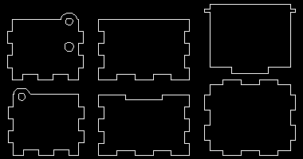
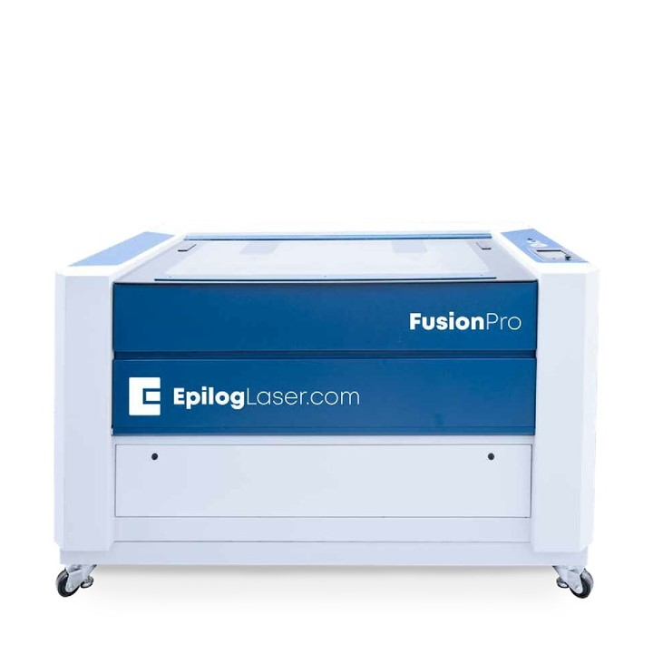
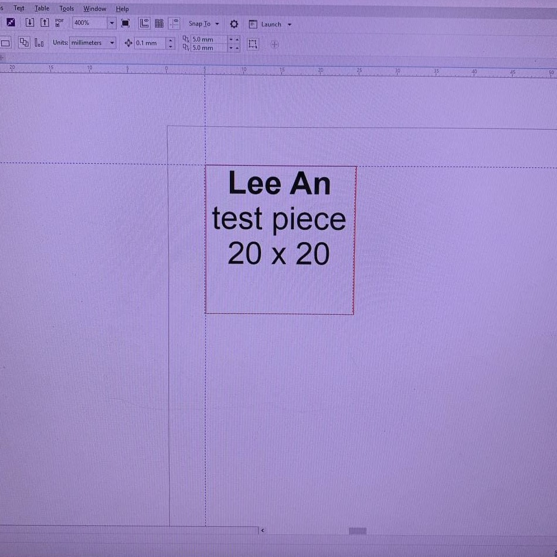
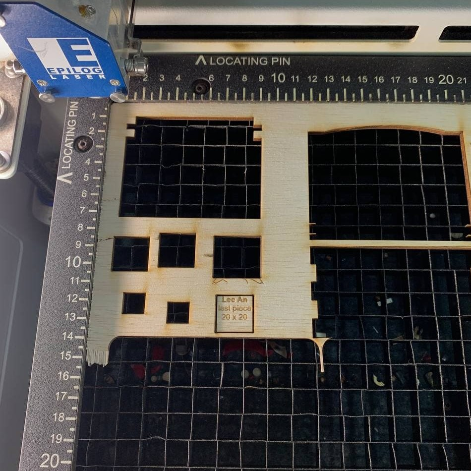
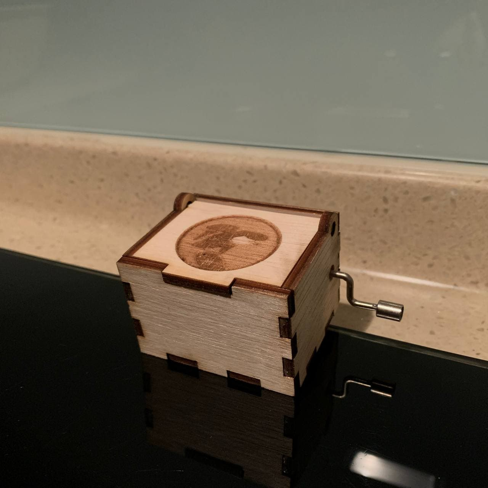

Laser Cutting is a fabrication process that uses a thin and focused laser beam to cut and etch materials into custom designs, pattern and shapes as specified by a designer. This non-contact, thermal-based fabrication process is ideal for several materials including wood, glass, paper, plastics and gemstone. For my project, I will be using a 3.5mm Plywood.
I will first design a musical box using the skills I picked up from my Laptop Stand modelling found here.
In order to laser cut, I first have to import the sketches as .dxf to LibreCAD to collate the sketches into one file. The LibreCAD file is then brought into CorelDraw where I did the final touches and prepare the Laser Cutter by adjusting the settings to cut the Music Box.
For design, I used the vector art I made here
I will be using the Epilog Laser Fusion Pro to cut my Musical Box with the following settings documented below.
Settings
Laser Cutter |
Epilog Laser Fusion Pro |
Material |
3.5mm Plywood |
Speed |
25 |
Power |
80 |
Frequency |
20 |
Engrave |
Default |
Before I begin cutting my Musical Box, I will cut out a 20mm x 20mm test piece. This helps me familiarise on how to operate the Laser Cutter while allowing me to check the tolerance of my cut with the settings I have used.
|  |  |
Now that I have learned how to use CorelDraw to cut out a test piece, I can begin cutting the musical box with what I have learned.
With the Musical Box completed, it concludes my first Laser Cutting project in this elective and I have learned how to take 3D models from Autodesk Fusion into Laser Cut model.